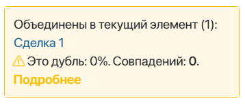
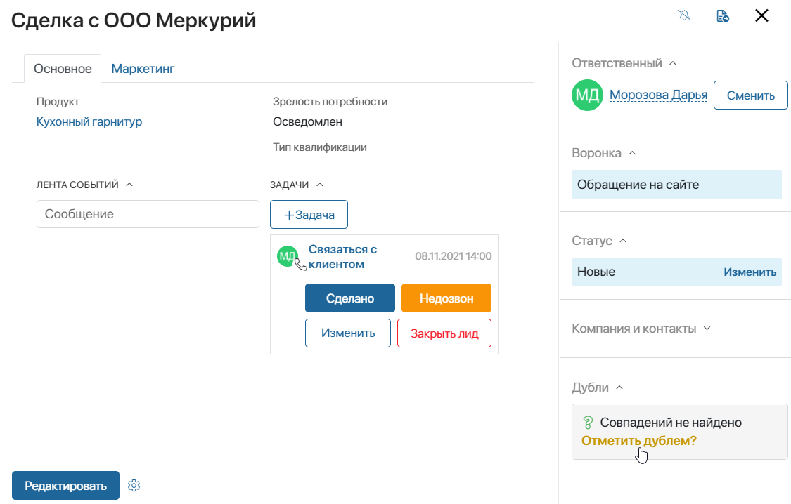
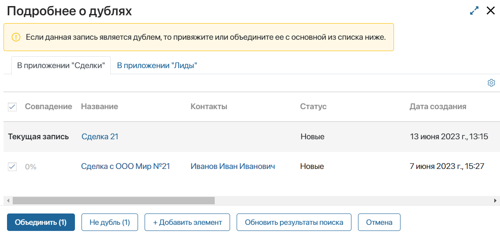

If similar items are found in the system as a result of the duplicate search, one of them can be marked as a duplicate. In this case, a link to the main item is created on the duplicate page. In this way, you can easily determine which item to continue working with.
When you mark an app item as a duplicate, you can Link it to another app item or Merge them. Options are available depending on the duplicate rules that are used.If items are compared within one app, they can be merged. If items from different apps are compared, items need to be linked.
For example, you created a deal and worked with a customer in it, and your colleague added a lead for that customer. Then you can mark the lead as a duplicate and link it to the deal so that all employees continue working with the main item.
When linked, the duplicate item will continue to appear in the app, but its name will be crossed out.
If you accidentally added two identical deals, you can mark one of them as a duplicate and merge them. After that, all employees will continue working with the main app item.
When merging, you can remove duplicates from the general list of app items or leave them. In this case, the name of the duplicate item will be crossed out.
How to work with duplicates
There are two ways you can work with duplicates in the system:
- On the Duplicate settings page after a duplicate check is completed.
- On an app item view form if you place the Duplicates widget on it.
Let’s look into these two options.
Work with duplicates on the Duplicate Settings page
To work with duplicates, do the following:
- Click on the gear icon next to the name of the workspace and select Duplicate Settings.
- On the top of the page, click the Start Search button if you want to run a duplicate check in all apps that duplicate detection rules are enabled for.
If you need to find similar items within one app, for example, to find duplicates among companies, open the Duplicate Search Result tab and click the Start Search button under the app name.
In both cases, you will see potential duplicates found in the system on the Duplicate Search Result tab.
- There will be separate sections for different apps. Open the drop-down list in one of the sections. Check the boxes next to the app items in the table that you want to process. Then click on one of the buttons that will appear under the list of potential duplicates: Link, Merge, Not a Duplicate, or +Add Item.

- Link. This button appears if you are comparing app items from different apps. For example, if you want to mark a lead as a duplicate of an existing deal. When you click this button, the duplicate will be linked to the main app item.
If the Duplicates widget is placed on the app form, you will be able to see the result of the linking in the sidebar of the duplicate page.
- Merge. This button appears if you are comparing app items within one app. For example, when you mark one lead as a duplicate of another. When you click this button, the comparison table will open. Here you need to specify the fields that will be shown on the main app item view form.
On the right, you can see the Merged record. By default, when you select one of the app items, all of its fields are shown in the column. You can select field values from different app items if needed. You can also enter a new name for the merged app item.

When you finish working with the table, click Merge. In the opened window, set the parameters for merging.

- Action to be performed for the duplicates after merging. The following actions are available for selection:
- Merge and mark as a duplicate. The duplicate item will remain available in the general list on the app page and will also be displayed in the search results. At the same time, the name of the item will be crossed out.
- Merge and delete duplicates. The duplicate item will be removed and will not appear in the app or search results. To find an item, open the search by parameters and click on the Removed filter.
- Inherit data after merging. Mark what data you want to pass to the main object:
Click the Confirm button.
If the Duplicates widget is placed on the app form, you will be able to see the result of the merge on the item pages. The main item sidebar will show the names of all its duplicates.

The duplicate page will show that this item has been merged with another item.

- +Add Item. Click this button if you want to add another main app item to the list and compare the potential duplicate with it.
Work with duplicates on app item pages
If the Duplicates widget is placed on an app view form, you can process duplicates on item pages.
To do that:
- Open an app item page.
- If this app item is a potential duplicate according to one of the duplicate detection rules, you will see a notification on the sidebar. To process the duplicate, click More.

- If no identical app items are found, you will see the No matches found notification on the side panel. If you are sure the app item is a duplicate, click the Mark as duplicate? link.

- In the window that opens, you will see a table for each app that duplicate detection rules are enabled for. Click +Add Item and select app items you want to compare with the potential duplicate.
- Check the box next to the app item you want to link or merge this item with and click one of the buttons that appear: Link, Merge, Not a Duplicate, or +Add Item.

In the Information About Duplicates window, you can also see all the items that were previously bound or merged with this app item. To access them, open the drop-down list by clicking the arrow next to Linked duplicates.
Found a typo? Select it and press Ctrl+Enter to send us feedback